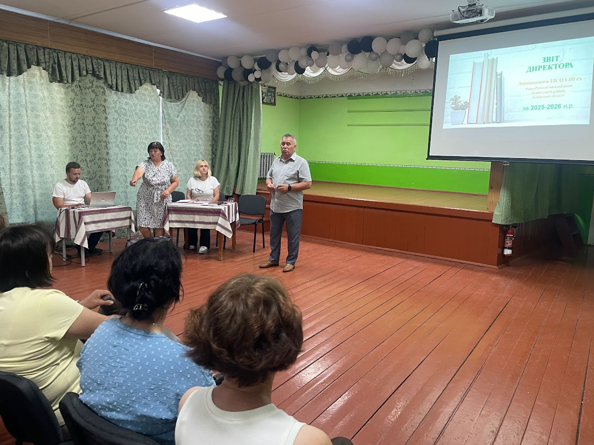

Осередок знань, патріотизму та всебічного гармонійного розвитку учнівської молоді.
Липницький заклад загальної середньої освіти І-ІІ ступенів є важливою освітньою і культурною перлиною Рава-Руської територіальної громади Львівського району.
У закладі функціонують початкова школа (1–4 класи) та гімназія (5–9 класи). Ми забезпечуємо впровадження Державного стандарту початкової та базової середньої освіти Нової української школи (НУШ), поглиблене вивчення предметів, цифровізацію та національно-патріотичне виховання.

Досвідчені фахівці, які скеровують освітній процес та створюють безпеку для учнів.
Очолює Липницький ЗЗСО І-ІІ ступенів, координує стратегічний розвиток, якість освіти та співпрацю з громадою.
Багаторічний директор школи, який зробив вагомий внесок у розбудову закладу, формування педагогічних традицій та авторитету школи.
Глибоке опанування навчальних дисциплін, розвиток критичного мислення, підготовка до подальшої профільної освіти та майбутньої професії.
Повага до державних символів України, шанування Героїв та Захисників, вивчення рідного краю та культури.
Рівні можливості для кожного здобувача освіти, підтримка дітей з особливими освітніми потребами, толерантність.
Психологічний захист, нульова толерантність до булінгу, навчання пожежній та мінній безпеці.